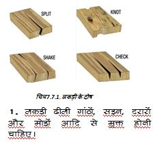
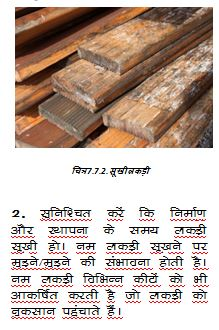
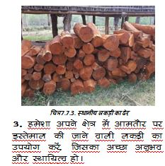
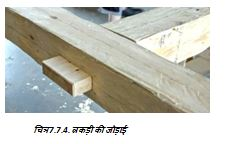
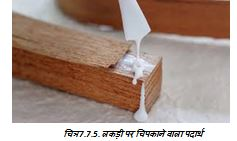

   
4. जोड़ों पर हमेशा स्टील के फास्टनर/क्लीट का उपयोग करें। मोर्टिस और टेनन प्रकार के जोड़ भूकंप और हवा के तूफान के दौरान जोड़ों पर कमजोर हो जाते हैं और टूट जाते हैं, इसलिए इन जोड़ों को स्टील के फास्टनर/क्लीट से मजबूत किया जाना चाहिए।
5. जांचें कि सभी जोड़ कसकर फिट हैं। समय के साथ अलग-अलग सिकुड़न के कारण ढीलेपन से बचने के लिए जोड़ों पर फेविकोल जैसा कुछ चिपकाने वाला पदार्थ लगाना बेहतर है।